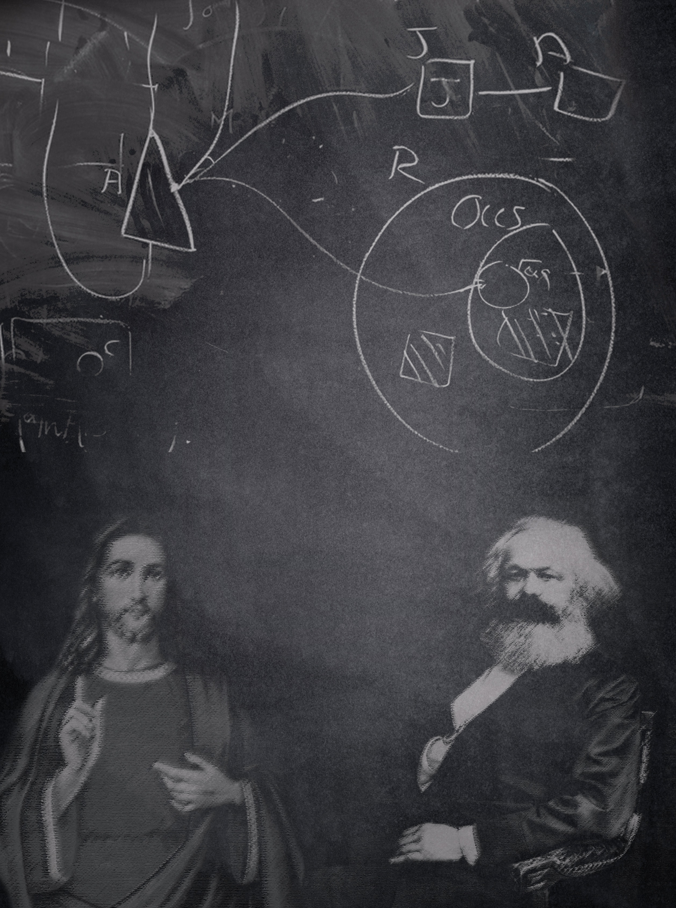
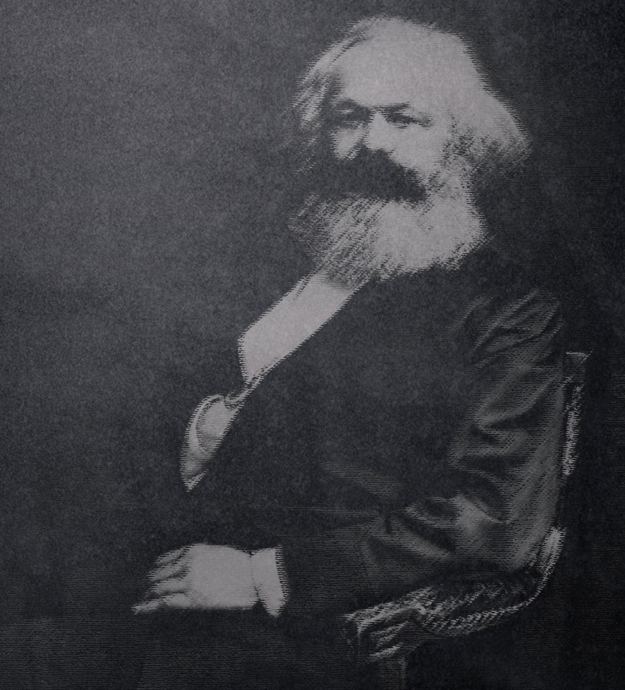

Estela Ibarburu. Profesora de Historia (IFD). Licenciada en Ciencias Históricas (UdelaR). Licenciada en Ciencias de la Educación (UdelaR). Profesora efectiva de Historia de la Educación en formación docente.

Resumen
El hombre es un ser político por ser un sujeto social que solo puede ser hombre en comunidad. Condición que revela la dimensión política de la actividad educativa en la medida en que es ejercida por hombres y tiene como objetivo la socialización
de estos. Esto implica la internalización de la ideología, que conlleva no solo las ideas sino también las prácticas que contribuyen a la construcción de la subjetividad.
Palabras clave: Filosofía, política, educación.
Title: Politics and education.
Abstract
Man is a political being because he is a social subject who can only be a man in community. Condition that reveals the political dimension of the educational activity as long as it is exerted by men and its goal is the socialization of men. This
implies the internalization of ideology, which entails not only ideas but also practices, which contribute to the construction of subjectivity.
Keywords: Philosophy, politics, education.
El término política proviene del griego (politikos), que significa ‘de los ciudadanos o del Estado’, vocablo que deriva de polis que significa ‘ciudad’ pero también ‘Estado’, en la medida en que la ciudad en la Grecia clásica constituía la unidad
estatal.
Platón y Aristóteles señalaban que el hombre es un animal social, es decir, un ser que requiere de los otros de su especie para sobrevivir. Por lo tanto, no es posible concebir que el individuo sea anterior a la sociedad. Para Aristóteles
Lo que prueba claramente la necesidad natural del Estado y su superioridad sobre el individuo es que, si no se admitiera resultaría que puede el individuo bastarse a sí mismo aislado así del todo como del resto de las partes; pero aquel que no puede vivir en sociedad y que en medio de su independencia no tiene necesidades, no puede ser nunca miembro del Estado; es un bruto o un dios (Aristóteles, 1974: 24).
El hombre es un ser político por ser un sujeto social, que solo puede ser hombre en comunidad, en sociedad. Carácter que revela la dimensión política de la actividad educativa en la medida en que es ejercida por hombres y tiene como objetivo la
socialización de estos.
La política educativa está enmarcada dentro de las denominadas políticas públicas. Aguilar Villanueva (2007) la concibe como
a) el diseño de una acción colectiva intencional, b) el curso que efectivamente toma la acción como resultado de las muchas decisiones e interacciones que comporta y, en consecuencia, c) los hechos reales que la acción colectiva produce (p.17).
En cambio, para Kraft y Furlong (2007):
…una política pública es un curso de acción gubernamental, en respuesta a problemas públicos. (Las políticas públicas) reflejan no sólo los valores más importantes de una sociedad, sino que también el conflicto entre valores. Las políticas reflejan a cuál de los muchos diferentes valores, se le asigna la más alta prioridad en una determinada decisión (p. 5).
Si bien las políticas educativas son políticas públicas, se distinguen del resto por la especificidad de los objetivos a alcanzar. José Domingo Contreras señala que estas
No soló crean marcos legales gales y directrices de actuación. También suponen la expansión de ideas, pretensiones y valores que paulatinamente comienzan a convertirse en la manera inevitable de pensar. Al fijar unas preocupaciones y un lenguaje, establecen no sólo un programa político, sino un programa ideológico en el que todos nos vemos envueltos (Contreras, 1997: 174 – 175).
El carácter que asuma, por lo tanto, la educación estará determinado por la ideología que sustente la política educativa llevada a cabo.
Ideología
Con respecto al término ideología, no existe un consenso acerca de su significado. A lo sumo se llega a acordar que es un sistema de ideas, creencias, compromisos fundamentales o valores sobre la realidad social (Apple, 1986: 33).
Dicha categoría fue creada por Antoine Destutt de Tracy en 1801, durante el período de la Revolución Francesa. Su pensamiento lo podemos situar dentro del materialismo francés del siglo XVIII. En su obra, Elementos de Ideología, propuso
la creación de una nueva ciencia de las ideas, una ideo – logia que sería el fundamento de todas las demás ciencias. El estudio de la ideología permitiría, según el mencionado autor, el conocimiento de la verdadera naturaleza humana al
interrogarnos de dónde se originaban nuestras ideas y cómo se desarrollaban. Utiliza el término ideas en el sentido amplio de estados de conciencia. Las considera como fenómenos naturales que manifiestan la relación entre el hombre, organismo
vivo, sensible, y su medio natural de vida. El objetivo de esta nueva rama del conocimiento sería analizar la construcción de las ideas. Parte de la premisa de que estas últimas están basadas en sensaciones físicas, lo que permitiría estudiarlas
con el método científico. Arriba, por último, a la conclusión de que ellas tienen origen en las necesidades y deseos del ser humano.
El significado que le otorgó Destutt de Tracy al término ideología va a sufrir muchos cambios a lo largo de la historia. Tenemos, por ejemplo, a Ludwig Feuerbach (1804 – 1872) pensador alemán que estableció los principios del humanismo,
que más tarde desarrollarán Marx y Engels (Abbagnano, 1987: 501). Para este pensador, el hombre no es solo espíritu o razón sino también materia y sensibilidad. De ahí que explicó la religión a partir de las necesidades del hombre. Este último
le asigna a Dios los atributos que quisiera poseer pero no posee. El objetivo del análisis que realiza Feuerbach consiste en que el hombre logre la autoconciencia que implica la conciencia de las necesidades de la naturaleza material de la persona.
Marx y Engels (1976) profundizan las ideas de Fuerbach, señalando la necesidad de destacar (p. 501) la relación existente entre la estructura social y política y la producción… De ahí que llegaron a afirmar que las ideas, las representaciones y la conciencia (p. 12) están al comienzo directamente vinculadas con la actividad material y las relaciones que los hombres establecen entre sí en el proceso de producción. Estas circunstancias hacen que
la moral, la religión, la metafísica y cualquier otra ideología que a ellas corresponde, pierden así, la apariencia de su propia sustantividad. No tienen su propia historia ni su propio desarrollo, sino que los hombres que desarrollan su producción material y su intercambio cambian también, al cambiar esta realidad, su pensamiento y los productos de su pensamiento. No es la conciencia la que determina la vida sino la vida la que determina la conciencia (Marx y Engels, 1971: 8).
Es justo señalar que no realizaron un reduccionismo económico sino, por el contrario, reconocieron las influencias recíprocas que se dan entre la superestructura y la base; si bien admitieron que, en última instancia, lo que determina la superestructura es el modo de producción. Estos autores le atribuyeron al término ideología una connotación negativa al considerarla una conciencia falsa, en la medida en que la persona desconoce los verdaderos factores que impulsan el pensamiento. Creyeron, por el contrario, que deriva su forma y su contenido del pensamiento puro, sea el suyo propio o el de sus predecesores
(Ídem, p. 7), desconociendo su origen de las condiciones materiales de su propia existencia y que cumple la función de servir a los intereses de la clase dominante.
Para Marx, las ideas de la clase que detenta el poder son, en todas las épocas, las ideas dominantes... No solo porque posee los medios de producción material, sino porque también tiene el control y producción de la elaboración de los bienes espirituales, de la producción de la cultura, lo que le permite darle un carácter hegemónico a sus concepciones.
Por otra parte, Berger y Luckman considera a las ideologías como universos simbólicos. Otros, como señala Geertz (Apple, 1986: 34), las piensan como “sistemas de ínter actuación de símbolos” que otorgan la posibilidad de hacer significativas unas situaciones sociales que de otro modo serían incomprensibles, en otras palabras, como la creación de representaciones compartidas por toda la sociedad y que le otorgan significado y, por lo tanto, justificación a la realidad socioeconómica política que, de otro modo, serían inexplicables, logrando de esta manera el consenso en la población. Esta interpretación la ubicamos dentro de la teoría de la tensión, y podemos mencionar como ejemplos de ella la de Durkheim y Parsons.
La función que cumple la ideología en la sociedad consiste en la constitución de formas que modelan la vida de las personas e inciden en la construcción significativa de la realidad, de las aspiraciones y de sus sueños.
Las ideologías, según Göran Therborn (1987), establecen en los sujetos:
Lo que existe y por ende lo que no existe. Construyen una visión determinada de quienes somos, qué es el mundo, la naturaleza, la sociedad, el sistema político, los hombres y las mujeres, las razas, la religión, etc.
Lo que es bueno, justo y hermoso y en forma implícita, sus contrarios. Estas categorías van a incidir en la elaboración de nuestros deseos y aspiraciones.
Lo que es posible e imposible. Establece los límites de nuestra acción y la condiciona en la medida en que no nos vamos a proponer cambios que consideramos irrealizables (pp.15 – 16).
Otro elemento importante a tener en cuenta es el lenguaje, que juega un papel significativo en la internalización de la ideología, en la medida en que refleja las estructuras socioeconómicas culturales de una sociedad determinada y, a la vez, condiciona
su percepción.
A pesar de las diferentes definiciones del concepto ‘ideología’, existe un consenso acerca de tres elementos que la caracterizan:
La ideología otorga legitimación a las acciones de un determinado grupo con el objetivo de lograr la aceptación y la adherencia del resto de la sociedad.
A la ideología siempre se la asocia con la existencia de conflictos de intereses existentes entre grupos sociales que buscan o tratan de mantenerse en el poder. Se hace evidente que en las disputas ideológicas está siempre en forma subyacente
la disputa para obtener la hegemonía.
El discurso empleado es muy distintivo; utiliza en forma sistémica argumentos que buscan no solamente la cohesión entre los miembros que integran su grupo sino que apunta a buscar apoyo en los grupos con intereses antagónicos (Apple, 1986:
35).
Grasmsci (2004) señaló la existencia de un grupo de intelectuales, los que él denominaba orgánicos, a los cuales consideraba empleados de la clase dominante para realizar las funciones subordinadas de la hegemonía social y del gobierno político, a saber: 1) del “consenso” espontáneo que las grandes masas de la población dan a la dirección impuesta a la vida social por el grupo fundamental dominante, consenso que históricamente nace del prestigio (y por lo tanto de la confianza) que el grupo dominante deriva de su posición y de su función en el mundo de la producción; 2) del aparato de coerción estatal que asegura “legalmente” la disciplina de aquellos grupos que no “consienten” ni activa ni pasivamente, pero que están preparados para toda la sociedad en previsión de los momentos de crisis en el comando y en la dirección, casos en que no se da el consenso espontáneo (p.16).
La ideología se internaliza en forma inconsciente, y comprende no solo las ideas sino también las prácticas. Incide, asimismo, en la construcción de la subjetividad de las personas, lo cual implica los valores, prejuicios, deseos, aspiraciones,
códigos, etc. Se presenta como una cosmovisión atemporal, quedando así oculto, para la mayoría de las personas, el carácter de obra cultural y, por lo tanto, relativo. Esta visión genera en la mayoría de los hombres una actitud acrítica de la
sociedad en que vive.
Gramsci realizó un gran aporte teórico al desarrollar y señalar el papel fundamental que tiene la hegemonía en los mecanismos de dominación. A diferencia de Marx, que le atribuyó un papel secundario a la ideología, el pensador italiano visualizó
la hegemonía como un conjunto organizado de significados y valores que configuran el mundo que, por otra parte, se visualiza como el único posible para la mayoría de las personas. Esta construcción social se presenta y es vivida como de sentido común o
ubicada dentro de un orden lógico, lo que impide su análisis racional por parte de la población en general.
Para Apple (1986), en cambio,
…la hegemonía es un cuerpo completo de prácticas y expectativas; nuestra asignación de energía, nuestro entendimiento ordinario de hombre y su mundo. Es una serie de significados y valores que, en la medida en que son experimentados como prácticas, aparecen recíprocamente confirmantes. Constituye así un sentido de la realidad para la mayoría de las personas de una sociedad, un sentido de lo absoluto porque se experimenta como una realidad más allá de la cual a la mayoría de los miembros de una sociedad le es muy difícil moverse en la mayoría de las áreas de sus vidas… (p.16)
Estas características explican lo difícil que resulta el cambio de la sociedad, ya que la este no se resuelve simplemente con las transformaciones económicas.
La educación es un agente fundamental para establecer la hegemonía cultural e ideológica; contribuye a la conformación de la personalidad con los valores y significados apropiados para que perciban como única realidad posible la existente.
Más tarde encontramos a Althusser, autor postestructuralista quien continuó y profundizó la línea de pensamiento de Gramsci.

Para Marx, las ideas de la clase que detenta el poder son, en todas las épocas, las ideas dominantes... No solo porque posee los medios de producción material, sino porque también tiene el control y producción de la elaboración de los bienes espirituales,
de la producción de la cultura, lo que le permite darle un carácter hegemónico a sus concepciones.
Este autor parte de la concepción clásica del marxismo acerca del Estado, al que se lo considera el aparato represivo de Estado. Señalaba la necesidad de distinguir entre el poder de Estado y el aparato de Estado. Para estos teóricos el aparato
de Estado es utilizado por la clase dominante para poder mantener su dominación sobre el resto de la sociedad.
Coincidía con Marx, en reconocer que una formación social que no reproduzca las condiciones de producción al mismo tiempo que produce, no sobrevivirá siquiera un año; sucede lo mismo con las relaciones de producción.
Para perpetuar a estas últimas Althusser señaló que el Estado cuenta con los aparatos represivos e ideológicos con el fin de mantener el poder hegemónico de la clase dominante. Entre los aparatos represivos tenemos (s/f) el ejército, la policía,
el gobierno, la administración, la prisión y como aparatos ideológicos a la familia, la iglesia, los medios de comunicación, el jurídico, político, sindical, cultural (literatura, arte, etc).
El aparato represivo funciona utilizando la violencia en tanto que los AIE funcionan mediante la ideología. Sin embargo, todo aparato de Estado, sea represivo o ideológico, utiliza al mismo tiempo la violencia y la ideología. La diferencia reside
en que unos funcionan intensivamente con la represión, incluyendo la física, como forma predominante, y solo en forma secundaria con la ideología. Por ejemplo, el ejército y la policía utilizan también la ideología ya sea con la finalidad de lograr
su propia cohesión y reproducción y por los valores que ambos defienden ante el resto de la sociedad. De la misma manera sucede con los aparatos ideológicos que funcionan utilizando en forma predominante la ideología; pero en situaciones límites
y en forma enmascarada está presente la represión simbólica. La iglesia y la escuela utilizan sanciones, excomuniones, exclusión, selección, etc. Por otra parte, en los medios de comunicación está en forma implícita la amenaza de expulsión
de aquellos periodistas que brinden una información que contradiga la verdad ‘oficial’ (p.13).
Política: Currículum oculto
El currículum oculto se refiere a la idolología que se transmiteen forma no explicita sino de manera implícita, a través de la selección de unos contenidos en lugar de otros, en la bibliografía recomendada, las prácticas educativas y, de forma subliminal,
en los símbolos presentes en las aulas. Por ejemplo, el retrato del prócer que representa determinado pensamiento político o la cruz en los colegios cristianos forman parte de un decorado que la vivencia cotidiana convierte en elementos constituyentes
del orden natural. Esta naturalización del orden social existente hace difícil visualizar el carácter político de la educación. Por esta razón, la mayoría de la población, incluyendo gran parte del cuerpo docente, la concibe de forma neutral o
apolítica. Esta representación va a coadyuvar en la construcción de un sujeto acrítico frente a las políticas educativas. Su praxis se reducirá a realizar muchas veces en forma inconsciente acciones contrarias al sistema de valores que detenta.
Se convertirá de este modo en un operario, en un simple actor que ejecuta órdenes en forma irreflexiva, en un objeto de las decisiones políticas de otros (Gutiérrez, 1984: 12). Su praxis educativa se reducirá a una mera rutina, a un ritual que
coadyuvará al proceso de su enajenación.
El carácter ideológico de la educación irrumpe en forma clara y contundente en los procesos revolucionarios. Cuando hay un cambio de régimen, este tiene que ir inexorablemente acompañado por un cambio en el modelo educativo que lo sustente y lo
consolide.
La revolución francesa constituye un claro ejemplo histórico. En este período, la burguesía tomó el poder con el propósito de sustituir la forma de gobierno monárquico por uno republicano. Esta es la razón por la cual surgió la necesidad de cambiar
el modelo educativo que apuntaba a formar súbditos dóciles por otro que constituyera ciudadanos capaces de ejercer sus derechos políticos. Asimismo se le adjudicó al Estado la función de la educación, en lugar de la Iglesia, institución que lo
había ejercido hasta ese momento. Cambio que obedeció también a razones de interés político, debido en gran parte al papel activo que tuvo en la defensa del antiguo régimen. Situación que, por otra parte, no garantizaba a la burguesía la formación
del nuevo hombre que sus intereses de clase requerían.
Negar el carácter político de la educación implica asumir una postura, la de mantener el orden establecido a través de su sacralización. Es desconocer su construcción sociohistórica y el papel significativo que ha tenido en la formación de una subjetividad
funcional a los intereses del grupo hegemónico.